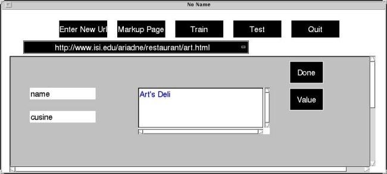
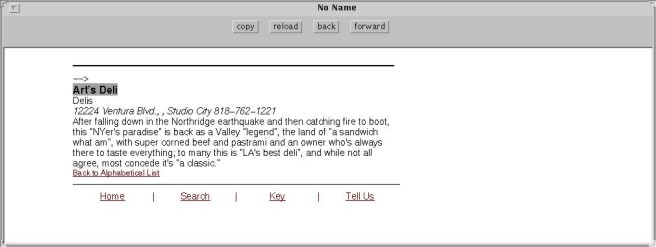

STEP 4:
Once you are done with the first page, you can load another one (e.g.,
from "http://www.isi.edu/ariadne/restaurant/art.html") and markup the new
name (i.e., Art's Deli) and cuisine (not shown here).


Last
modified: Wed Jul 22 17:05:50 PDT 1998